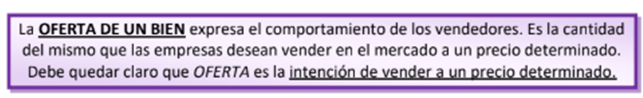

LA OFERTA DE UN BIEN
Para que un bar pueda servir café, primero los agricultores tienen que sembrar los granos de café. El problema es que las tierras son limitadas y los agricultores deben escoger si van a sembrar patatas, tomates, o bien nuestro producto en cuestión, el café. Una vez más, si los agricultores van a cultivar más o menos café depende de nuevo del precio del café. Es decir, la cantidad ofertada de café dependerá del precio que se les ofrezca a los productores (oferentes) de café.

¿Qué es la oferta?
LA OFERTA DE UN BIEN expresa el comportamiento de los vendedores. Es la cantidad del mismo que las empresas desean vender en el mercado a un precio determinado. Debe quedar claro que OFERTA es la intención de vender a un precio determinado.
¿Qué pasa si los precios son muy bajos?
Si los precios del café son muy bajos, nosotros los demandantes estaremos encantados. Sin embargo, los productores de café no lo estarán tanto. Esto se debe a que producir café cuesta dinero. Si los precios son muy bajos los productores no podrán recuperar los costes que han tenido. Por tanto, si los precios son bajos habrá muy poquitos productores dispuestos a vender café porque apenas ganarán dinero.
¿Y si los precios son altos?
Como norma general, el agricultor cultivará aquellos bienes que más beneficio den. Si los precios del café son altos es que los consumidores los están pagando lo que hará que se quiera cultivar más café (y ganar más dinero). Esto nos lleva a la ley de la oferta.
La ley de la oferta
Siempre que los precios suben, los productores desearán vender más café, ya que les permite tener más beneficios. Para entenderlo piensa un agricultor que puede cultivar café o patatas. Si el agricultor está vendiendo sus patatas o sus granos de café al mismo precio, digamos 1 euro el kilo, entonces le da igual producir 1 kilo de patatas o de café (si los costes son iguales). Pero ¿Qué pasa si el precio del café sube a 1,5 euros el kilo porque la gente demanda más café? Los agricultores ven que los precios están subiendo porque hay más demanda (hay escasez) Automáticamente es más beneficioso producir café que patatas (gano 0,50 euros más por kilo) lo que hará que muchos agricultores abandonen el cultivo de patatas y produzcan café. Al subir el precio, hay más agricultores produciendo café y la cantidad ofertada será mayor.
Esto se cumple con casi todos los productos, por lo que los economistas lo llaman “LA LEY DE LA OFERTA”. A más precio más cantidad ofertada.
La Curva de Oferta
OFERTA es la representación gráfica de las diferentes cantidades de
café ofertadas por los productores para cada precio.
La Ley de la Oferta
OFERTA se cumple con casi todos los productos. A mayor
precio, mayor cantidad ofertada.